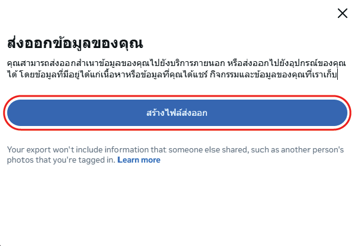

ดาวน์โหลดข้อมูลจาก Instagram
ก่อนอัปโหลด ต้องขอข้อมูลจาก Instagram ก่อน ทำตามขั้นตอนด้านล่างได้เลย
เข้าไปที่ศูนย์บัญชี Instagram
กดที่ลิงก์นี้เพื่อไปหน้า ดาวน์โหลดข้อมูลของคุณ หรือเข้าผ่าน โปรไฟล์ → เมนู ☰ → ศูนย์บัญชี → ข้อมูลและสิทธิ์การอนุญาตของคุณ → ส่งออกข้อมูลของคุณ
ตั้งค่าการส่งออก
กด"สร้างไฟล์ส่งออก" → เลือก"บัญชี Instagram" ของคุณ → เลือก "ส่งออกไปยังอุปกรณ์" → กด "ปรับแต่งข้อมูล" → ติ๊กเฉพาะ "ผู้ติดตามและคนที่คุณติดตาม"
รอรับไฟล์ ZIP
Instagram จะส่งอีเมลแจ้งเตือนเมื่อไฟล์พร้อม (อาจใช้เวลาสักครู่ หรือนานกว่าชั่วโมงขึ้นอยู่กับรายชื่อยอดFollow) จากนั้นดาวน์โหลดไฟล์ผ่านอีเมลหรือกดดาวโหลดจากหน้ากิจกรรมปัจจุบันเลยเป็นไฟล์ .zip มาเก็บไว้ในโทรศัพท์หรือคอมของคุณ

อัปโหลดไฟล์ ZIP
นำไฟล์ .zip ที่ได้จาก Instagram มาอัปโหลดตรงนี้ ไม่ต้องแตกไฟล์
วางไฟล์ .zip ตรงนี้
ลากมาวาง หรือกดปุ่มด้านล่าง
รองรับเฉพาะไฟล์ .zip จาก Instagram เท่านั้น
โหลดสำเร็จ!
ผลลัพธ์
| # | ชื่อผู้ใช้ | วันที่ติดตาม | ลิงก์ |
|---|
ไม่พบผลลัพธ์